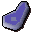
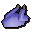

Druidic Ritual
Scripts in
scripts/quests/quest_druid/NPCs involved
Items involved

Enchanted bear
Enchanted chickenInvolvement is derived from identifiers referenced by the quest scripts.
scripts/quests/quest_druid/
Enchanted bear
Enchanted chickenInvolvement is derived from identifiers referenced by the quest scripts.